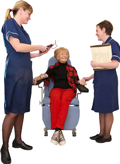

-

Rydyn ni’n gweithio ar ran Llywodraeth Cymru. Rydyn ni’n cefnogi gweithwyr gofal cymdeithasol i wneud eu gwaith yn dda.
-

Ein gwaith ni yw:
-
cadw rhestr o rai o’r bobl sy’n gweithio mewn gofal cymdeithasol
-

dweud wrth weithwyr gofal cymdeithasol beth sy’n bwysig yn eu gwaith
-

gwneud yn siŵr bod hyfforddiant ar gyfer gweithwyr gofal cymdeithasol yn dda
-

gwneud yn siŵr bod gweithwyr mewn gofal cymdeithasol yn gwybod pa hyfforddiant sydd ar gael iddyn nhw. Eu helpu i gael yr hyfforddiant fydd yn eu gwneud yn weithwyr da.
-
eu helpu i wneud yn siŵr bod gweithwyr gofal cymdeithasol yn gwybod sut i wneud eu gwaith yn dda.
-

Mae gweithwyr gofal cymdeithasol yn cefnogi pobl sydd angen gofal cymdeithasol. Maen nhw’n cynnwys:
-

gweithwyr cymdeithasol
-
gweithwyr cymdeithasol sy’n fyfyrwyr
-
gweithwyr mewn cartref plant
-

penaethiaid cartrefi gofal ar gyfer oedolion
-

penaethiaid pobl sy’n cefnogi pobl yn eu cartrefi.
-
Bydd pobl yn cael gofal cymdeithasol pan fyddan nhw’n cael cefnogaeth i fyw yn eu cartrefi. Mae gofal cymdeithasol hefyd yn cynnwys canolfannau dydd a gweithwyr gofal cymdeithasol.
Cynghorau Gofal
Mae Cynghorau Gofal yn gwneud y rheolau ar gyfer gweithwyr gofal cymdeithasol a rheolwyr gofal cymdeithasol. Maent wedi ysgrifennu’r Codau ac maent yn sicrhau bod pobl yn gwybod amdanynt. Gall Cynghorau Gofal rwystro pobl rhag gweithio mewn gofal cymdeithasol os nad ydynt yn gweithio yn y ffordd mae’r Codau’n dweud bod rhaid iddynt wneud.